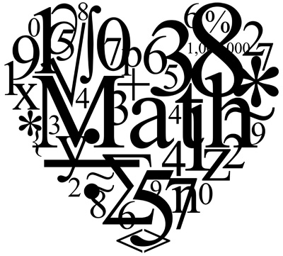
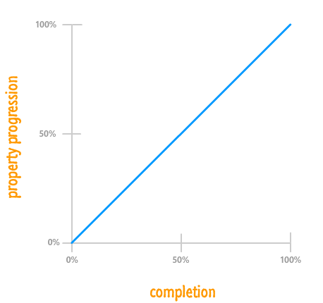
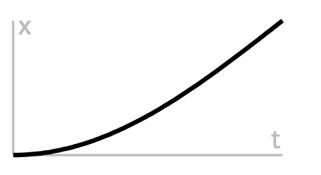
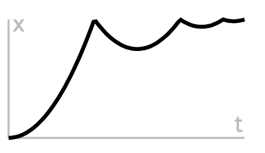

Algorithms for Animation
Simple formulas to
activate
play
inform with
brand
UI
Direction that the web is going is really the direction that software development is going.
Platform independent, connected to everyone and all the things too.
Happily for us, the technology is making it more and more fun to create really great tools and experiences
This talk is about one small slice of that - animations.
one part psychology
Meta purpose of this talk is bridging the design and development gap
With creating software applications, we tend to see our work as distinctly in the code. The reality is that we might actually really enjoy the design aspect. As software engineers we have a natural requirement to design, it is just represented in code. We should also take into consider the greater experience design.
How many of you consider yourselves a designer? Developer? Hybrid?
Designing animations for software has always been a bit decoupled from the implementation.
Developers can benefit by understanding basic principles behind animation design
Everyone can play a role in adding life to the interface
Math, and by extension physics is the foundation of our reality (design, nature, beauty abstracted away gives us math formulas)
Take a problem that can't be solved directly by animation and can't be solved by technology and work together to acheive much better resolution ' Joe Longson sr software engineer zootopia
"You can take a problem that can't be solved directly by animation and can't be solved by technology and work together to acheive a much better resolution."
- Joe Longson, Senior Software Engineer - Zootopia
Creating the animation and lighting effects for today's movies requies huge server farms and super computers with somewhere around 55,000 cores.
Sometimes spread across 4 geographic locations
400,000-plus computations per day require new animation techniques way beyond the scope of this talk.
CLI
GUI
NUI
Technology is moving closer and closer to the real world
A good abstraction will generalize that which can be made abstract; while allowing specificity where the abstraction breaks down and its successful application requires customization to each unique requirement or problem.
We expect our screens to change, to update and to inform us with that update
We abstract the changes that a machine is taking with the user interface, otherwise we would all just be back writing assembly code
The GUI was the first level of abstraction, also known as WIMPs (windows, icons, menus, pointer)
The next level is NUI or natural, using our fingers for touching, squishing, stretching and the sort of thing we see happening with Magic Leap and VR
Affordance & percieved affordance
What does it mean to "feel" right? how close does something uphold our view of reality?
We will evaluate our experience with something new or novel to us (such as a new interface) by how close it feels to what we know.
Based in our interaction with normal objects in our daily lives and hence in physics if the real world
We attribute those things around us to have certain properties - this is called affordance.
Perceived
So using visual metaphors is one way to indicate deletion but motion is another.
Animations are cognitive aids
In today's interfaces, the affordance of screens is change
It is easily perceived & interpreted
It can be discovered
let's look at some examples of ways in which people are using animations to assist users
Animations have always been a part of good Graphical user interfaces. From the annoyingly animated Clippy to the almost equally annoying genie effect. we've suffered through bad animation and mostly ignored the good because it was in service of our primary goal
We recognize movement in our peripheral vision faster than changes in color.
and definitely before we read any text
Movement directs our attention
Movement triggers emotional response
New theories actually tie emotional responses to our rapid decision making (somatic-marker hypothesis)
Something that is getting more and more attention now is the timing of animations in interfaces, which I'll go into later
So we are hypersensitive to motion and therefore it needs to feel right
Subtle Cues
Really simple animations can do a lot to set up expectations
animations can create an emotional reaction
more and more brands are creating custom animation libraries and components to use in all their digital properties - Apple built it directly into their developer platform, Facebook created a FIG (Facebook Interface Guidelines). Google sort of open sourced theirs with Material Design
assistive and descriptive animation
animation that creates emotional connection to a brand
Allows the user to make a quick decision based on an emotional response to an animation
Give quick feedback
It’s nice to feel like things are reacting to what you’re doing.
CoDrops
guidance, continuity and PACE
if we had a piece of paper for every form we have filled out online we wouldn't have any forests left. bureacracy is alive and way too active
Colin Garven
guidance, continuity and PACE
if we had a piece of paper for every form we have filled out online we wouldn't have any forests left. bureacracy is alive and way too active
Nav igation
Animated transitions between screens convey logical relationships and create an understood "map" of an interface from how things enter and exit a screen.
death of breadcrumbs
don't ask someone to read the fucking manual
Adrian Zumbrunnen
Adrian Zumbrunnen
better
no reload and we now know that where the about section is, simple but used everywhere
Context
always keep your users informed and knowing that something is happening
context sensitive navigation
Jason Zigrino
During the transition, the user is guided to the next view. The surface transforms to communicate hierarchy. Loading occurs behind the scenes to reduce perceived latency.
Interactive
less clicking, less reading
let your users explore and discover, make it fun
Sergey Valiukh
How do you communicate animation ideas?
Math 
Happily animation has its roots in some very easy math functions.
You can then take basic functions and add in all sorts of complexity
position, velocity, acceleration
Early animation techniques were developed by Windsor McCay
sequences of drawings by the best designers created key animations
lackeys would draw the frames in between
Instead of a human making the natural transitions betwee key frames, we use software to be the "inbetweener", which uses physics and math.
Disney adopted this technique and came up with the "12 principles of animation design"
Motion
var ball = document.getElementById('ball');
var start = 0;
var basicAnimation = function (e) {
start += 12;
basic.style.left = start + "px";
if (Math.abs(start) <= 800) {
requestAnimationFrame(basicAnimation);
}
}
Simple addition of one pixel on another.
Doesn't give much insight into where you are at within the animation - you know position but not necessarily how much progress has been made.
Animation gets interesting when you can start to think of things in terms of percent changed
The basics of animation: interpolation
valueAtTime = (end - start) * time / duration + start
One simple formula describes all animation. all based on time. where you want to start, go (change), total duration and then you can always get at where you are currently in the process
To make these motions appear realistic, interpolation algorithms have been sought that approximate real life motion dynamics.
custom algorithms, motions with unique, unnatural and entertaining visual characteristics
Breaking it down to [0-1]
valueAtTime = (end - start) * time / duration + start
Change @ Percent Complete
when making some kind of animation, we know the starting and ending positions, and want to transition between these. All of these can be converted to interpolation from 0 to 1.
- thinking about things in terms of percent complete
you are trying to map everything into a point of reference between 0 and 1
multiply any value between 0 and 1 with another value between 0 and 1, and the result is guaranteed to be between 0 and 1.
this will then work for everything - you will have your different parameters like position, color, shape, etc but you can map them to a value between 0 to 1
So Interpolation allows you to start talking more generally and easily porting over whatever you need to put motion to into a very easy range of reference.
Timing
var time, startTime;
var start = function () {
startTime = new Date().getTime();
run();
}
var run = function () {
time = new Date().getTime() - startTime;
//valueAtTime = (end - start) * time / duration + start
div.style.left = 900-0 * time/1000 + 0+"px";
if(value < 1) requestAnimationFrame(run);
}
Now we have a consistent number to work with. All animations will fall in a range from [0-1]. The percentage of completion…
What a property value is at any given time isn't nearly as important as how that property changed from its initial value to the final value over the lifetime of the animation.
Consistent, unvarying progress from beginning to end. Too mathmatetical... need something with some variety

Consistent, unvarying progress from beginning to end. Too mathmatetical... need something with some variety
"Using a term like nonlinear science is like referring to the bulk of zoology as the study of non-elephant animals."
- Stanislaw Ulam
The vast majority of mathematical equations and natural phenomena are nonlinear, with linearity being the exceptional, but important, case.
With Fermi and John Pasta, Ulam studied the Fermi–Pasta–Ulam problem, which became the inspiration for the vast field of Nonlinear Science.
Natural move ment
Velocity, Acceleration, Friction, Torque
nothing in our world moves linearly
Easing
(end - start) * easingfunction([0-1]) + start
Change in property times (some float) plus beginning value .
Easing functions define the rate at which your property changes. All that matters is what percentage of the final property value has been reached at any given point during the animation's lifetime.
Power Functions - EaseIn
endX * Math.pow(percentChange, 3) + "px";
Now we get to start playing around with our animations. We can make them more organic and we can tweak our values to produce exactly the effect we are after.
A great (and simple) starting point is the power function.
You can put any power in there and see if it meets your needs.
So that is kinda sudden... and you don't always need to ferarri ... although who doesn't want the ferrari ...
Power Functions - EaseOut
(endX - startX)*(1 - Math.pow(1 - (t / d), 3)) +startX+"px";
We see this a little more used on the web. the slide in. This is back to the feeling that when a person walks into your periferral vision they already have velocity and then they slow down to a stop.
Trig! ... sine :)

(endX - startX)*Math.sin( t/d * Math.PI / 2 ) +startX+"px";
So what if you need a bit of nuance, it isn't a ferrari and it isn't the enter and exit stage left scenario? Trig is what starts to get you towards the more powerful physics engines. These are how you can get really good at representing natural and organic movement.
It is subtle, but the devil is in the details and it is all about precise control.
Introducing time and motion changed everything for me, because what I realized was that it gave you precise control over the emotion you are trying to convey and how an audience will interpret your message. I’d often look to title sequences for inspiration because I was fascinated with how a 30 second or 3 minute sequence had the ability to set the tone for an entire film and foreshadow what was going to happen.
Follow Through > 1
We can also go beyond that 0-1 range
One of the 12 Basic Principles of Animation is Follow through or elastic movement.
Follow through refers to an animation technique where things don't stop animating suddenly. They exceed their final target slightly before snapping back into place. This useful technique is something that can only be done by going beyond the 0-1 range.
Elasticity
(endX - startX)*k * k * ( ( s + 1 ) * k - s ) +startX+"px";
The math is getting a little more complicated now ... we're bringing in some additional factors but the basic underlying equation is still the same. you can pull most of the necessary functions from Robert Penner's easing functions or just check the source for tween.js. then you just plug and play and adjust values.
Bounce

if ( k < ( 1 / 2.75 ) ) {
return 7.5625 * k * k;
} else if ( k < ( 2 / 2.75 ) ) {
return 7.5625 * ( k -= ( 1.5 / 2.75 ) ) * k + 0.75;
} else if ( k < ( 2.5 / 2.75 ) ) {
return 7.5625 * ( k -= ( 2.25 / 2.75 ) ) * k + 0.9375;
} else {
return 7.5625 * ( k -= ( 2.625 / 2.75 ) ) * k + 0.984375; } }
Bounce is everywhere. You drop something, likelihood it is going to bounce a bit before it settles. so this is starting to represents our physical world. It is also starting to introduce Newtonian physics to our animations.
Physics Engines
As you get closer and closer to reality, the math starts to go from simple algebra to more complicated calculus.
Things like damping of a spring. this is where things get pretty tricky but there are
There are many great javascript physics engines out there that take a lot of the leg work out of it for you. Diving into the source code can be fun though.
flick gesture from inertial scroll
Initial velocity of your finger then the program takes that slope and degrades it until zero
flick gesture from inertial scroll
damping of a spring. this is where things get pretty tricky but there are
Initial velocity of your finger then the program takes that slope and degrades it until zero
Linear Interpolation Function (start, stop , amount)
function lerp(a,b,x) { return a+x*(b-a); }
The lerp function is convenient for changing anything in a linear fashion.
Rad ial motion (galaxies)
anim.theta += .02*Math.pow(1-anim.r/cw,8) * Math.PI;
anim.p.x = anim.r * Math.cos(anim.theta);
anim.p.y = anim.r * Math.sin(anim.theta);
Theta here is just how far from the center you are (polar notation)
The expression of a point as an ordered pair (r,theta) is known as polar notation, the equation of a curve expressed in polar coordinates is known as a polar equation, and a plot of a curve in polar coordinates is known as a polar plot.
In much the same way that Cartesian curves can be plotted on rectilinear axes, polar plots can be drawn on radial axes such as those shown in the figure above.
// changing angle based on radius. farther out the less we change it
// galaxy planetary system
// simulation of gravity, w/out the orbits taking into account
// based on radius of canvas we have (cw)
// whenever you can you should use relative positioning, allows you to scale by context (screensize)
// animation is percentage of screen width
// closer to the middle of the screen the higher your theta is and makes everything in the center go faster (delta theta is proportional to the distance from the center)
// Math.pow is an aethetic thing, gives a bit more differentiation
// LIVE CODE?
// really simple, just changing p.x and p.y
Rain (varying velocity )
// different shaped circles (depth)
function shape() { return randomCircle(.006, .09) }
// initializes each circle w/ random velocity (px/second)
x:lerp(xmin,xmax,Math.random()),
y:lerp(ymin,ymax,Math.random())}
// basic equation: incremental x and/or y by velocity to get acceleration
anim.p.x += anim.v.x
anim.p.y += anim.v.y
// this just keeps everything w/in the bounds of the canvas
anim.p.x = (anim.p.x + cw/2) % cw - cw/2
anim.p.y = (anim.p.y + ch/2) % ch - ch/2
// as long as velocity is constant you just see straight line movement
// need to think about gravity
Constraints (gravity)
// simple constraint of gradually increasing gravity
gravity = lerp(0,2,fraction);
// add an amount of gravity to the y velocity
anim.v.y += gravity
// same as before, add the velocity to the position
anim.p.x += anim.v.x
anim.p.y += anim.v.y
// flip velocity for bounce
anim.v.y = -.9*Math.abs(anim.v.y)
// adds a bit of drag to slow down horizonal movement
anim.v.x *= .99;
/// tada! Newton's laws in effect
// simple constraint of gradually increasing gravity
// does not change position necessarily (directly) but acts directly on velocity
// all this does is add the amount of gravity to the y velocity
// so y velocity is always going down
// higher your y velocity, the lower you are on the screen
//(if same velocity, perfectly elastic collision)
// the .09 makes it not perfectly elastic
// friction/gravity
// fluid, slightly viscous or air drag
// still goes in same direction but each movement is a bit slower and will head towards 0
Collisions (Box2d)
// create a world with a ground and some objects
var bodyDef = new Box2D.Dynamics.b2BodyDef();
var fixtureDef = new Box2D.Dynamics.b2FixtureDef();
// set the details for our constraints
fixtureDef.density = 1.0;
fixtureDef.friction = 0.5;
fixtureDef.restitution = 0.2;
// all this does is add the amount of gravity to the y velocity
world.Step( 1 / 60 /* frame-rate */,
10 /* velocity iterations*/,
1 /* position iterations */);
// math gets complex enough here that it is easier to rely on a physics engine to handle the calculations
Perform ance
There are lots of things to consider when you are starting to introduce a lot of animations into your web sites. There isn't one easy answer on how best to approach it buy there are some basic guidelines.
Use Keyframes, Transitions & Transforms with CSS
Use requestAnimationFrame with JS
Web Animation API (WAAPI)
CSS is more performant when it comes to basic animations - things get pushed to a different thread
rAF is basically a browser API that is made to optimize concurrent animations together into a single reflow and repaint cycle
To prevent frames from getting dropped due to too many rendering requests, use requestAnimationFrame. requestAnimationFrame takes a callback that executes when the browser pushes a new frame to the screen. Essentially, the browser pulls for work at each frame, instead of us pushing work for each new touch event. This allows for concurrent animation to fit into one reflow/repaint cycle. As a result, it makes animations look much smoother because the frame rate is consistent.
RAIL
Response 100ms
Animation 16s
Idle 50ms
Load 1000ms
1000 - loading, 100 - finger down response, 6 - per frame, 50 - idle for cleanup
JACOB NEILSON
Users have no patience to wait for your UI to load, and once it does they want to make a decision in less than .1 seconds
Browser Rendering
Avoid Paint & LayoutPush things to compositor thread
Use Transform & Translate
There is no one shot solution. CSS is great for the small things, but you still have to watch out that you aren't doing a lot of layout changes that might affect other elements. Check out csstriggers.com if you want the exact details
CSS
.box {
-webkit-transform: translate(0, 0);
-webkit-transition: -webkit-transform 500ms;
transform: translate(0, 0);
transition: transform 500ms;
}
.box.move {
-webkit-transform: translate(100px, 100px);
transform: translate(100px, 100px);
}
Javascript
var target = document.querySelector('.box');
var player = target.animate([
{transform: 'translate(0)'},
{transform: 'translate(100px, 100px)'}
], 500);
Users have no patience to wait for your UI to load, and once it does they want to make a decision in less than .1 seconds
Too ls
So you can see that when animations start to get complicated, the math does start to get a bit more complicated as well. It is worthwhile to take the opportunity to play around with it but there are also lots of options out there to take care of it for you as well. Given the basic knowledge you have now, you can understand better what is going on under the hood.
Proto typing
Total control, but still a handoff point to developers.
CSS: browser can optimize the animation. pushed to GPU.
position, scale, rotation and opacity
great for simple animation on interface elements that don't have a lot of interdependency in their transitions
Animating in JavaScript does give you a lot of control: starting, pausing, reversing, interrupting and cancelling are trivial. Some effects, like parallax scrolling, can only be achieved in JavaScript.
Go forth and animate !
So I'd like to encourage you all to go out and play with animations and with these formulas. See what you can do with just an HTML page and some simple JS functions. Play around with the values and find out what types of animations appeal to you.


 Courtney Hemphill
Courtney Hemphill